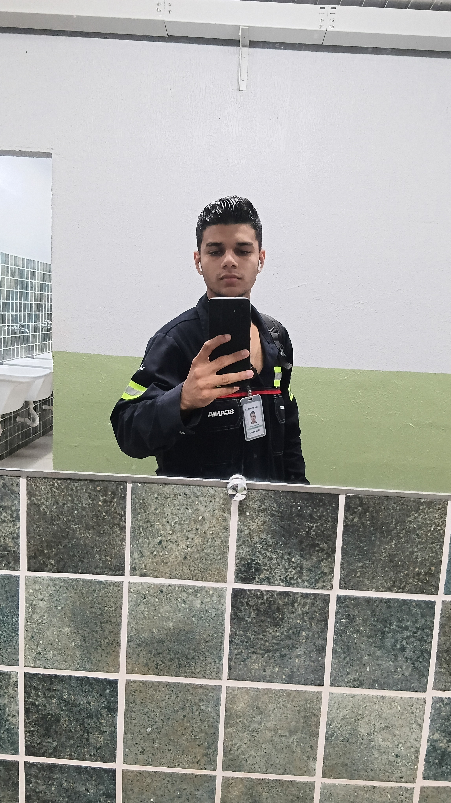

Gustavo Araujo de Menezes
Desevolvedor web e python iniciante, com conhecimentos básicos em Banco de Dados, design de sites, scripts simples e sistemas com tkinter.
Iniciei na área de programção na época da pandemia, como um simples passatempo. Estudei primeiramente C++, porém parei no meio do caminho. Foi então que descobri o Python e me debrucei nessa linguagem de programação simples, entretanto poderosa. Parei inúmeras vezes meus estudos (3 vezes) e então retornei de forma definitiva.
Foi nesse período também que comecei estudar as linguagens web HTML e CSS. Da mesma forma do Python, acabei parando algumas vezes no caminho, mas vejo que a programação é uma área que me chama a atenção e vejo meu potencial nela.
Estou estudando programção para criar meus próprios projetos e viver dessa arte. Creio que até o final do ano eu consiga realizar meus primeiros serviços de forma completa.